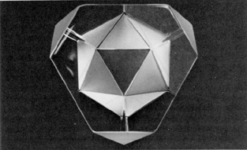

Fig. 100.120
Image of Icosa and Tetra:
Photograph of a truncated glass tetrahedron with frosted triangular facets producing an image of clustered tetrahedra that approximate an icosahedron. (See discussion at
Sec. 934.
)
Copyright © 1997 Estate of R. Buckminster Fuller